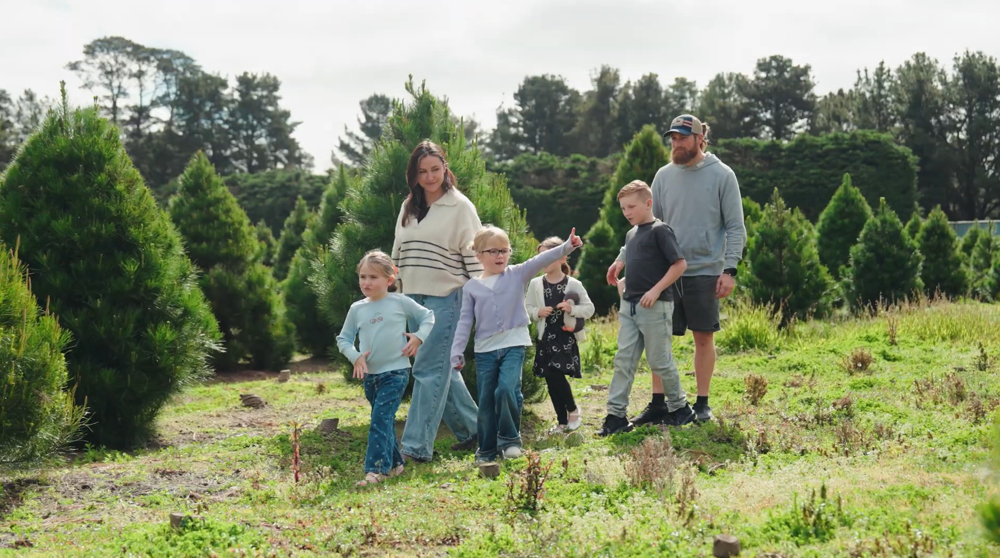
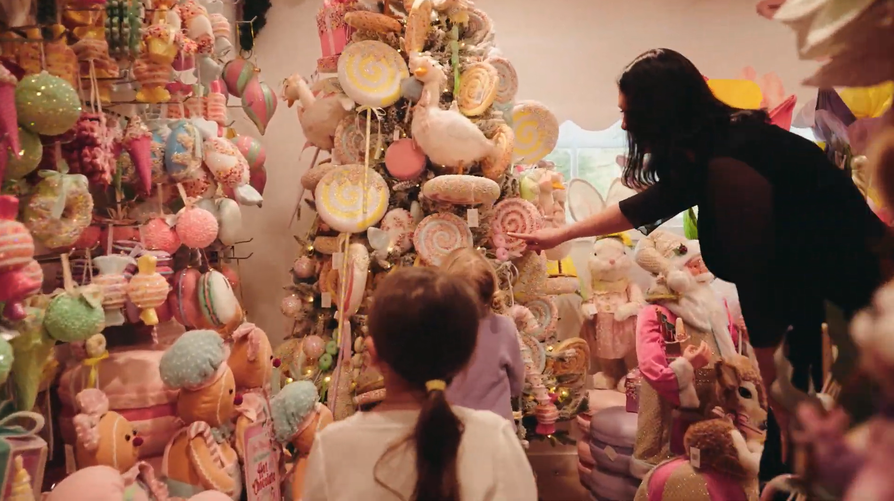
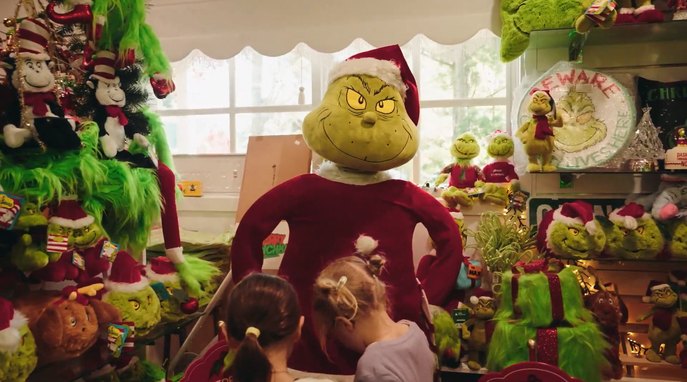
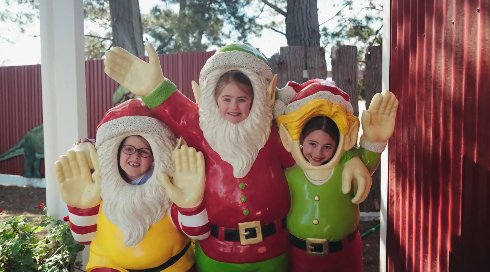

We take pride in growing beautiful, fresh Christmas trees with care and attention.
Our farm is built around family traditions and the joy of sharing Christmas with others.
We take pride in growing beautiful, fresh Christmas trees with care and attention.
From choosing your tree to taking family photos, every visit is an opportunity to create cherished memories.
Somerville Christmas Tree Farm is a family-owned farm dedicated to growing beautiful Monterey Pine Christmas trees and sharing the magic of the festive season.
What started as a small family venture has grown into a place where families come together to create lasting memories, surrounded by the beauty of nature.
We take pride in our trees, our land, and our community. Every Christmas, we look forward to welcoming visitors and helping them find the perfect tree for their homes.
CHRISTMAS EVENTS


